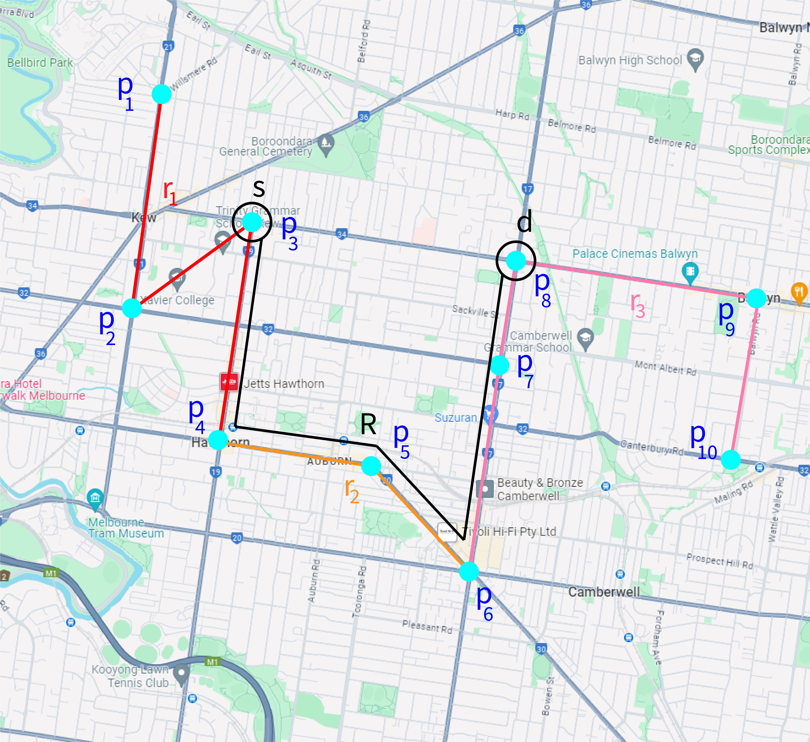
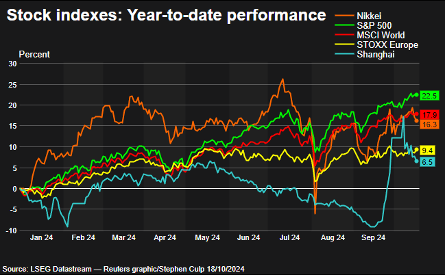
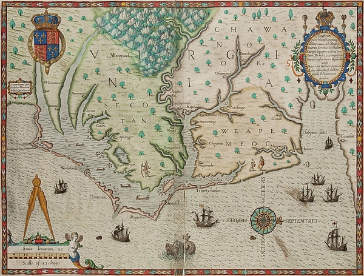
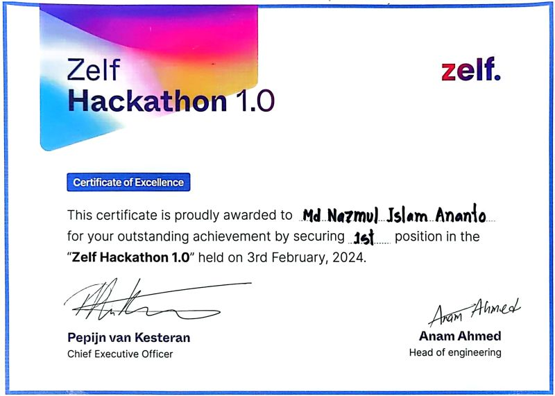
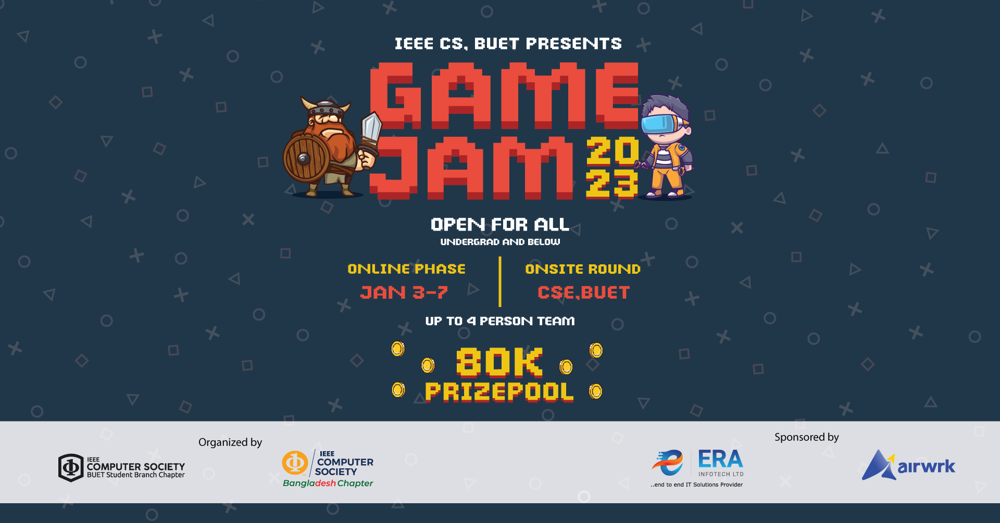

|
I am a Software Engineer at Zelf AI, where I
build data pipelines that handle millions of social media analytics
APIs. I craft automation solutions for hundreds of businesses and collaborate with retail
partners and cross-functional teams on key features.
I hold a BSc in Computer Science and Engineering from BUET with a CGPA of 3.91 and recognition in the Dean’s List. My
undergraduate thesis, "COMPASS: Geo-Spatial Reasoning for Popular Path Query using LLMs," thrives on proposing a two-stage
approach for route extraction and synthesis solving the "Popular Path Problem".
With a strong foundation in Software Development, Natural Language Processing, and Computer Security,
I have contributed to impactful research projects, including early warning systems for river erosion and AI-driven business insights.
Additionally, I have led academic projects such as automated trading systems and comprehensive itinerary planning tools, showcasing both technical depth and practical problem-solving capabilities.
Email /
GitHub /
LinkedIn /
Resume
|

|
Education
-
Bachelor of Science (BSc. Engg.) in Computer Science and Engineering
[2019-2024]
Bangladesh University of Engineering and Technology (BUET),
Dhaka, Bangladesh
- CGPA: 3.91/4.00 (Dean's List Award)
- Notable Courses: Machine Learning; Microprocessors, Microcontrollers & Embedded Systems;
Compiler; Computer Networking; Simulation & Modeling; Computer Security; Computer Graphics;
Artificial Intelligence; Computer Architecture; Operating Systems; Data Structures & Algorithms
|
|

|
COMPASS: A Chain-of-Thought Prompting Approach toward Geo-Spatial Reasoning for Popular Path Discovery and Synthesis using LLMs
Nazmul Islam Ananto, Shamit Fatin
This study tackles the limitations of traditional geo-spatial algorithms by utilizing the spatial reasoning capabilities of LLMs.
The project employs a two-stage approach: first, identifying paths from existing geo-spatial data, and second, synthesizing novel paths that adhere to constraints such as distance, popularity, and accessibility. COMPASS demonstrates superior performance compared to traditional methods, addressing challenges in dynamic pathfinding scenarios.
The insights gained from this project showcase the transformative potential of LLMs in real-world applications beyond language tasks. We evaluated GPT-4o, GPT-o3-mini and Llama 3.1 8B. Currently targeting submission to EACL 2026. Stay tuned for updates and potential open-source contributions!
Supervised by Dr. Mohammed Eunus Ali
and collaborated with Dr. Md Rizwan Parvez
|
Work Experience
-
Software Engineer
[March 2024-Present]
Zelf AI
Brooklyn, New York
- Built data pipelines collecting and processing 80M+ daily video analytics from social media public APIs
- Developed automation tools serving 100+ enterprise clients
- Collaborated with retail partners and cross-functional teams for critical features
- Tech Stack: Python, Selenium, Playwright, Appium, Burp Suite, Mitmproxy, ADB, GCP, Docker, GitHub Actions, Terraform
-
Software Consultant
[June 2025-Present]
Shottify
Dhaka, Bangladesh
- Conducted knowledge sharing sessions on Information Retrieval and Social Media Analysi
- Developed News Aggregator for renowned international news portals including New York Times, Reuters- [See Here]
- Building AI agents to identify fact check on current affairs
-
Research Assistant
[July 2022-June 2024]
Institute of Water and Flood Management (IWFM), BUET
Dhaka, Bangladesh
- Practical implementation of an Early Warning System for River Erosion prone areas
- Published in Frontiers: A Riverbank Erosion Early Warning System
- Led the Full-stack development team using React, Express, Firebase & PostgreSQL
- Details of the Project
-
Machine Learning Intern
[May 2023-June 2023]
Era-InfoTech Ltd
Dhaka, Bangladesh
- Worked on analysis of real-life business data applying Natural Language Processing techniques,
Unsupervised Learning i.e. K-means clustering
-
Physics & ICT Instructor
[January 2019-Present]
Udvash Academic & Admission Care
- Conducted classes regularly on Secondary & Higher Secondary Physics and ICT
- Got recognized as one of their distinguished teachers
|
|

|
Stock Trader: Automated Agent for Stock Trading
Machine Learning, BUET in 2024
code /
presentation /
Stock Trader is a machine learning project aimed at building an automated agent for stock trading, trained and tested on data from the Dhaka Stock Exchange.
This project utilized supervised learning models to predict stock price trends and optimized trading decisions based on historical data. Techniques employed include feature engineering, time-series analysis, and backtesting. The system demonstrated the potential for enhanced decision-making in financial markets by integrating algorithmic approaches.
Supervised by Ajmain Yasar Ahmed
|
|

|
Maps 'n Bags: Itinerary Planning System
Software Development, BUET in 2023
code /
Maps ‘n Bags is an itinerary planning system providing trip suggestions, travel tracking, budget management, and travel diaries.
Developed as part of a software development project, this tool integrates modern web technologies including ExpressJS, Material UI, PostgreSQL, Firebase, and Selenium for scraping. It aims to simplify travel management with an all-in-one solution for users.
This project highlights the application of full-stack development and automation in building practical solutions for travel enthusiasts.
Supervised by Tahmid Hasan
|
|
|
Creative Production Management: A Production System for Agencies
Information and System Design, BUET in 2023
resources /
estimation /
Creative Production Management is a production management system designed for creative agencies to streamline workflows and resource allocation.
The system incorporates features like resource management and estimation modules, built with BPMN, Mock UI, ERD, Sequence Diagrams, and State Diagrams. The project emphasizes effective information and system design, providing agencies with a reliable tool to enhance their operational efficiency.
Key contributions include system architecture design and functional prototype development, showcasing skills in system analysis and practical implementation.
Supervised by Dr. Anindya Iqbal
|
|
|
Withered Away: Old Home Management System
Database Systems, BUET in 2022
video /
backend /
frontend /
Withered Away is a comprehensive management system for old homes, streamlining administrative tasks and improving service quality for elderly care facilities.
The system was developed using ExpressJS, Material UI, PostgreSQL, and Oracle, later adapted fully to PostgreSQL. It features modules for resident tracking, staff scheduling, and resource management.
This project highlights advanced database management, frontend-backend integration, and practical problem-solving for community-focused solutions.
Supervised by Md. Toufikuzzaman
|
|
|
Red Light Green Light: Adaptive Traffic Controller
Microprocessors and Microcontrollers, BUET in 2022
video /
code /
Red Light Green Light is a traffic light controller system designed to adapt dynamically to traffic conditions and train detection.
This project, developed as part of a Microprocessors and Microcontrollers course, utilizes Arduino and sensors to monitor traffic flow and prioritize train crossings. The adaptive system minimizes congestion and improves traffic flow in real-time scenarios.
The project demonstrates hands-on expertise in embedded systems, sensor integration, and adaptive algorithm design for practical applications.
Supervised by Md. Masum Mushfiq
|
|
|
Four In A Row: Connect 4 Game Development
iGraphics, BUET in 2019
code /
play now /
Four In A Row is a digital version of the popular game Connect 4, developed as part of a graphics programming course.
The project was implemented using C++ and iGraphics, an OpenGL wrapper, to create an interactive and engaging game interface. It involved designing the game logic, rendering graphics, and handling user interactions.
This project showcases fundamental skills in game development and graphics programming.
Supervised by Dr. Mohammad Saifur Rahman
|
|

|
Zelf Hackathon 1.0 (Champion)
February, 2024
Secured first place among 400 contestants in Zelf Hackathon 1.0, demonstrating technical excellence and problem-solving capabilities. Got hired as a Software Engineer as a consequence.
|
|

|
GameJam 2023 (5th)
January, 2023
play now /
Developed “Asteroids”, a level-based game using p5.js following the theme “It’s not supposed to do that”. The game secured 5th place among 68 participating teams.
|
Mentoring
As a mentor, I have guided and supported individuals in their personal and professional development, helping them to achieve their goals and reach their full potential.
I have mentored students in various subjects, including computer science, mathematics etc.
-
Nuzaima Mahmood
[2020]
European School of Economics, London
- Got her through the Computer Science Courses including DSA, OOP, DBMS
-
Sazid Hasan
[2021-2023]
- Helped him get admission into BUET Biomedical Engineering Department
-
UDVASH
[January 2019-Present]
- Conducted 1000+ classes teaching High School Physics, Mathematics and ICT
- Mentored over 200 students for their Higher Secondary and Secondary Board Examinations
|
|